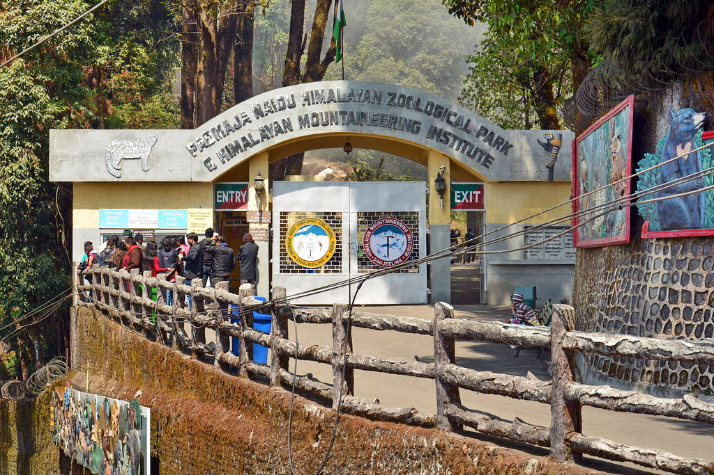
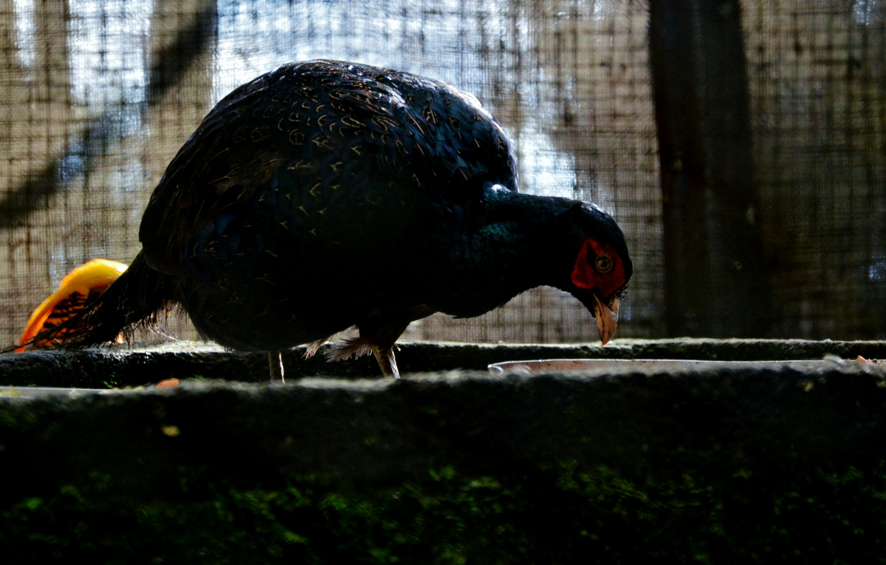

Jawahar Parbat, Darjeeling


About The Destination
The Padmaja Naidu Himalayan Zoological Park is renowned for its conservation efforts and is home to endangered species like the red panda and snow leopard. Located in the heart of Darjeeling, this high-altitude zoo offers a scenic view of the Eastern Himalayas and educates visitors about Himalayan wildlife.